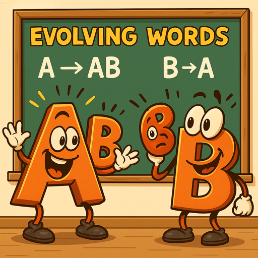

In this problem you should submit a complete program with the main function, reading with functions such as scanf and printing with functions such as printf.

Your task is to compute the evolution of a word (made up of just letters 'A' and 'B') showing consecutive generations of it according to the following rules:
For instance, if we start with "A" and ask for 4 generations, the following happens:
n=0: A initial
/ \
n=1: A B the initial single A spawned into AB by rule (A → AB), rule (B → A) couldn't be applied
/| \
n=2: A B A former string AB with all rules applied, A spawned into AB again, former B turned into A
/| | |\
n=3: A B A A B note all A's producing a copy of themselves in the first place, then a B, which turns ...
/| | |\ /| |
n=4: A B A A B A B A ... into an A one generation later, starting to repeat then
The first line of input contain a string S representing the initial word to consider (made only of letters 'A' and/or 'B').
The second line contains an integer K indicating the number of generations to compute.
The output should contain exactly N+1 lines: the first line contains the initial word S and the following N lines contain the next N generations of that word.
The following limits are guaranteed in all the test cases that will be given to your program:
| 1 ≤ |W| < 10 | Length of the initial word | |
| 1 ≤ K ≤ 10 | Number of generations |
You can be assured that the final generation will not have more than 10&nsbp;000 letters.
| Example Input 1 | Example Output 1 |
A 4 |
A AB ABA ABAAB ABAABABA |
| Example Input 2 | Example Output 2 |
ABBA 3 |
ABBA ABAAAB ABAABABABA ABAABABAABAABAAB |
Content by Fernando Silva and Vanessa Silva (DCC/FCUP), copied from the original website.